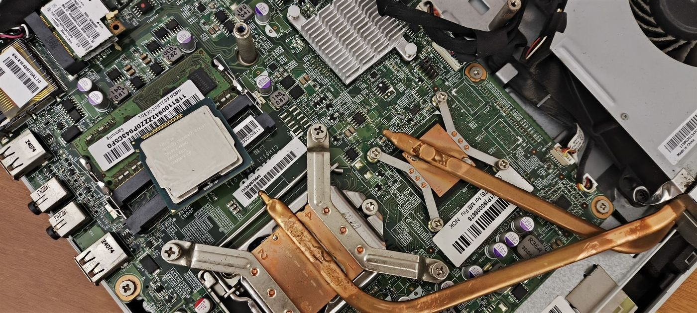

Web Technologies · 2026
Six pages,
built by hand.
No framework, no build step — just HTML, CSS and a little JavaScript. Quotes worth reading twice, ideas I might build next, a machine that does nothing on purpose, and the notes behind all of it.

The machine behind all this — from Hardware Reference ↗
01
Quotes
Eighteen lines worth reading twice, from Žižek to Engelbart.
02Project ideas
Six things I would like to build next, and who each one is for.
03The machine
A switch that turns itself off, plus a number game.
04About
Who writes this, how the pages are put together, and what I would change.